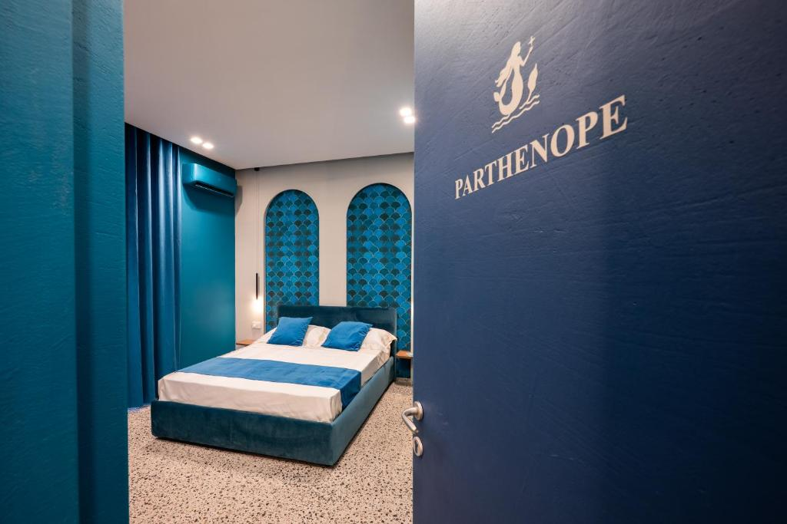
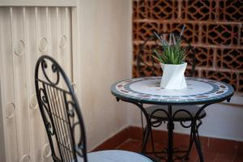

Via Francesco de Sanctis 3, Napoli
Camere di design nel centro storico di Napoli
A 60 metri dalla Cappella Sansevero, tra i vicoli di San Gregorio Armeno. Tre camere, tre colori, una città da vivere a piedi.

Napoli comincia appena fuori dalla porta
Alma Napoli è una struttura ricettiva al primo piano di un palazzo storico in Via Francesco de Sanctis, la strada del Cristo Velato. Camere climatizzate e curate in ogni dettaglio, una sala comune per gli ospiti e Wi-Fi gratuito ovunque.
Ideale per coppie e famiglie che vogliono scoprire la città senza auto: Spaccanapoli, i presepi di San Gregorio Armeno e le chiese del centro sono a pochi minuti a piedi.
Vedi tutte le camere
Le nostre camere
Tutte le camere
Il vostro soggiorno inizia qui
Ogni camera ha bagno privato con doccia, aria condizionata, TV a schermo piatto, macchina da caffè, frigorifero, minibar e cassaforte. Lenzuola e asciugamani sono sempre inclusi.
Verifica disponibilità- Nel cuore del centro storicoA 60 metri dal Museo Cappella Sansevero.
- Wi-Fi gratuitoConnessione in tutta la struttura.
- Check-in e check-out expressArrivi e partenze senza attese.
- Pulizie giornaliereCamere riordinate ogni giorno.
- Camere familiariSoluzioni per chi viaggia in famiglia.
- Parcheggio[Dettagli parcheggio da confermare]

Prenota direttamente al miglior prezzo garantito
Nessuna commissione, contatto diretto con chi ti ospita e tutti i consigli per vivere Napoli prima ancora di arrivare.
Prenota ora